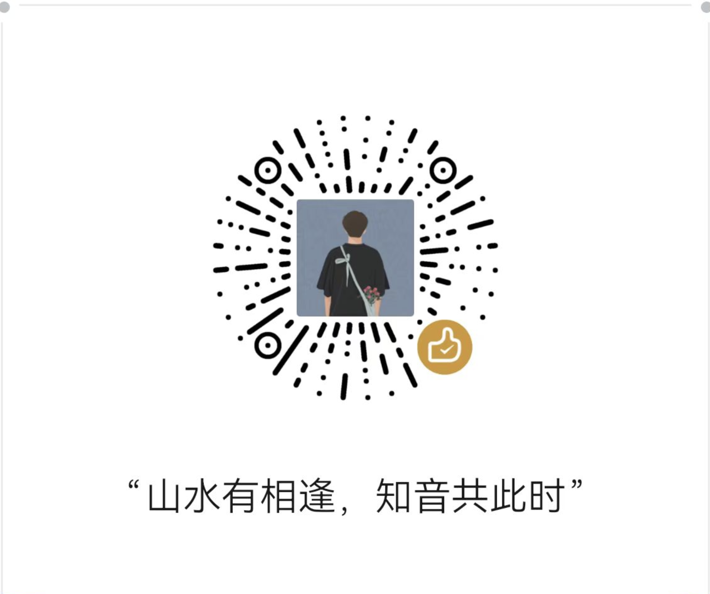

我是谁
一名10年的后端程序员，毕业于河北燕山大学，现在依然奋斗在一线（没有奋斗到管理层，拖了技术大佬们的后腿）。
前些年在北京当牛马，忙得团团转，完全没有自己的时间。后来因为一些原因，回到了老家石家庄，虽然依然很忙，但也总算有了一些自己的时间。
而我这个人呢，有了时间就想折腾一些东西，然后就有了这个博客（技术方向），也有了自己的公众号（时政方向）。
其实，在刚毕业的时候，对写东西这种事兴趣不大，对自己的记忆力过分的相信，认为一些东西只要自己理解消化了，完全不用记录。
后来随着年纪的增长，记忆力在下降，很多东西记忆还是模糊，尤其是技术海洋里的知识点浩如烟海，就想linux命令一样，完全是离散的，很多都没有关联点，想要靠人肉记忆实在是困难。
而且，随着时间的增加，阅历的增加，我对很多东西的理解也是在变化的，人也从刚入社会的愤世嫉俗、奋斗逼、清澈的愚蠢渐渐变成了心态平和、沧桑。
所以，就有了写东西的想法，一是为了记录技术的成长，二是为了记录自己的一些思考，三是在这个世界上留下一些自己的痕迹。
网站架构与成本
原则
- 成本低，因为知道这个博客大概率不会盈利，成本要尽量低，这样这个博客才能持续的运行下去。
- 写作简单，博客框架搭建好后，我只要能够专注写文章就可以了，剩下的都交个程序自动化运行。
- 好看，既然主要是我自己在看，我也是有审美追求的。
架构
- github pages: 本着上面的原则，我最终选择了github pages作为网站的静态服务器，主要还是因为其免费。还能托管代码、自动更新网站。
- hexo-fluid： 2025年发现的博客框架，选择他的原因一个是够好看，再有就是使用js写的，我有能力去魔改，而且这个框架还在保持更新。
- 域名：其实通过前两步，已经可以把网站搭建起来并让人访问了，但我还是加了一个域名来让人更好的记住，而且github还支持域名免费升级https.付费。
- 评论插件：使用的twikoo，为了使用这个插件还搞了一个免费的mongodb数据库。 免费。
成本
- 域名：hancher.top, 30元/年。
编年史
- 史前：一开始在CSDN博客网站发一些技术的帖子，后来觉得CSDN抄袭严重，且还要审核，就想着自己搭建博客了。
- 2021年，博客建立，因为当时正在学习go语言，使用的以go语言开发的hugo主题
- 2022年
- 8月，博客升级，因为hugo扩展比较难以，改为github 官方推荐的jekyll主题
- 9月，博客仓库由公开库转为私有库
- 10月，接入不辣子
- 10月，接入了google站长工具统计和百度统计
- 2024年，
试图通过Vercel的方式，来实现百度爬虫爬取我的博客的目的，但最终因为墙的原因失败了。 - 2025年，博客升级，升级为更好看的hexo-fluid主题
- 1月：添加了评论功能，使用的是twikoo插件
- 3月：接入cloudflare管理DNS+博客托管，实现对网站内容的加速
打赏
如果感觉本站让您感到有收获，且看到这里还有打赏的冲动，欢迎小赏一下，也算是对我输出的一种肯定。
